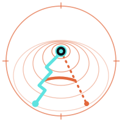

Go
- Distance
- Time outside
- Climb
- Radiation
- Back inside
Working at target 1
10:00local solar time
- Walked
- Elevation
- Grade
- Air
- Dose
- Out for

Marswalk planner · Mount Sharp, Gale Crater
Loading NASA data…
Ariadne
A safe thread across Mars
Mars · Gale Crater · Aeolis Mons
4.826° S 137.389° E
Marswalk planner · NASA Space Apps 2026
Data: NASA · JPL · USGS
Click Gale Crater to begin
Ariadne · Mission briefing
Curiosity has been climbing Mount Sharp in Gale Crater since 2014. This planner combines its measurements with orbital maps to find the safest walking route to the science targets you choose, then checks the walk against your suit's limits before you step outside.
Downloading Mars data…